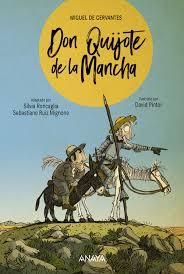

Don Quijote de la Mancha
Primera Novela Moderna de la Literatura
Miguel de Cervantes
Editorial Real Academia Española - ISBN: 978-8467042863
Sinopsis de Don Quijote de la Mancha
Un hidalgo manchego enloquece de tanto leer libros de caballería y decide salir al mundo como caballero andante. Acompañado de su fiel escudero Sancho Panza, vive aventuras inolvidables luchando contra molinos de viento y buscando justicia donde solo hay realidad prosaica.
Recomendado por Jorge Luis Borges como la obra fundacional de la literatura moderna. Cervantes creó no solo una novela, sino un universo literario que ha inspirado a generaciones de escritores. Una reflexión magistral sobre la locura, la idealización y la naturaleza humana.
🎬 Análisis y Reseña del Libro
Las aventuras del ingenioso hidalgo y Sancho Panza